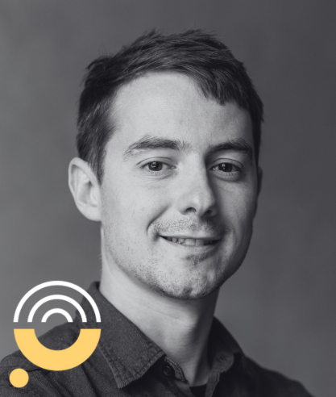

Truffato sui social o su un'app di messaggistica? Come recuperare le tue criptovalute
Sì, le criptovalute perse in una truffa su Telegram, WhatsApp, Facebook, Instagram o un'app di incontri possono a volte essere recuperate. Ogni trasferimento ha lasciato una traccia permanente sulla blockchain, anche se la chat è sparita. Quando i fondi raggiungono un exchange regolamentato, si può richiedere un blocco. La velocità decide la maggior parte dei casi.
Il gruppo sembrava reale. Il "mentore" rispondeva a ogni domanda. Poi i prelievi si sono bloccati. Non è stata colpa tua: queste organizzazioni lavorano con copioni, profili falsi e annunci a pagamento, e ingannano ogni giorno anche persone prudenti. La chat forse è già stata cancellata, ma il denaro ha lasciato una traccia. Ecco come seguirla.
Puoi recuperare il denaro perso in una truffa su Telegram?
A volte sì. Il recupero si basa sulla registrazione blockchain dei tuoi trasferimenti, che sopravvive a gruppi cancellati, numeri bloccati e "mentori" svaniti. I nostri investigatori tracciano i fondi on-chain e richiedono un blocco quando raggiungono un exchange regolamentato. Nessuna azienda seria garantisce il recupero. Agire in fretta e conservare i tuoi identificativi di transazione conta più di ogni altra cosa.
Perché il recupero è possibile
- La blockchain non dimentica. Ogni pagamento che hai effettuato resta registrato in modo permanente, qualunque cosa succeda alla chat.
- L'app era solo il luogo d'incontro. Il tuo denaro si è mosso on-chain, quindi la traccia esiste al di fuori di Telegram o WhatsApp.
- Gli exchange sono punti di strozzatura. Per incassare, i truffatori devono passare attraverso piattaforme regolamentate che possono congelare i fondi su prove solide.
Cosa fare ora
- Metti subito al sicuro i tuoi identificativi di transazione (TXID), gli indirizzi wallet e ogni screenshot rimasto.
- Segnala l'account o il gruppo alla piattaforma, e il furto alla tua polizia o alla Polizia Postale e delle Comunicazioni.
- Richiedi una valutazione forense gratuita prima che i fondi vengano ulteriormente frazionati.
Dove iniziano queste truffe: gruppi, messaggi diretti, annunci e profili
Telegram, WhatsApp, Facebook, Instagram e le app di incontri sono i luoghi in cui iniziano queste truffe. Le piattaforme in sé sono legittime: i criminali si limitano a cacciare dove le persone passano il loro tempo.
Quattro porte conducono alla stessa trappola. Un invito a un gruppo di "segnali di trading" pieno di persone che vincono. Un messaggio amichevole da uno sconosciuto, spesso iniziato con un cortese "numero sbagliato". Un annuncio a pagamento che promette profitti in criptovalute, a volte con il volto di un personaggio noto. Un nuovo match o follower che diventa personale in fretta.
Comunque inizi, una truffa di investimento sui social finisce sempre allo stesso modo: le tue criptovalute finiscono in un posto che non puoi più raggiungere, e la persona che ti ha guidato lì smette di rispondere. Le sezioni seguenti trattano ciascun canale, le prove che vale la pena conservare e cosa può ancora essere tracciato dopo la scomparsa degli account.
Telegram e WhatsApp: falsi gruppi, "mentori" e bot
La truffa da investimento su Telegram di solito assomiglia a una comunità. Decine di membri pubblicano screenshot di profitti e ringraziano il "professore" o il "mentore" per i guadagni. Quasi tutti quei membri sono account gestiti dalla stessa organizzazione. La truffa con le criptovalute su WhatsApp inizia più spesso uno contro uno: un "mentore" compare nei tuoi messaggi, paziente e generoso di consigli, e promette rendimenti tramite una piattaforma specifica. Quel mentore non richiesto è uno schema documentato: la truffa del mentore crypto su WhatsApp.
I bot completano l'illusione. Pubblicano "segnali" in tempo reale, mostrano il tuo saldo che cresce e confermano prelievi falsi per altri membri. Nel momento in cui depositi, hai già osservato per settimane sconosciuti "avere successo". Ogni parte di quella messinscena era costruita apposta per te.
Vale la pena conoscere un altro schema: una volta che il tuo numero raggiunge una lista di vittime, i contatti continuano ad arrivare. Un cliente ce lo ha descritto con le sue parole: «Voglio che finisca tutto... ho bloccato circa 400 numeri WhatsApp in 7 mesi. È una follia!». Un'ondata di nuovi "consulenti" e "aiutanti" dopo una perdita è già di per sé un segnale d'allarme: documentala e non rispondere a nessuno di loro.
Facebook, Instagram e app di incontri: profili falsi, regali, deepfake
Le truffe crypto su Facebook e la sua gemella su Instagram si basano sulla tattica dell'abuso di fiducia. Profili falsi clonano persone reali, a volte un amico il cui account è stato copiato o violato. Annunci a pagamento usano video deepfake di personaggi noti che sembrano promuovere una piattaforma di investimento. Post con finti regali promettono di raddoppiare qualsiasi criptovaluta inviata a un indirizzo speciale.
Sui regali la risposta è semplice: nessuno raddoppia criptovalute a degli sconosciuti. Ogni indirizzo "invia X, ricevi 2X" è una porta a senso unico, per quanto convincente sia il video che lo accompagna.
Le app di incontri offrono la versione più lenta e personale. Un match costruisce settimane di intimità, poi introduce "l'investimento" come un progetto condiviso per il vostro futuro. Se questa è la tua storia, la nostra pagina sulla truffa romantica tratta il meccanismo emotivo e il modo più sicuro per uscirne. E se sei stato truffato su Facebook, Instagram o un'app di incontri in una di queste forme, la logica di tracciamento più avanti in questa pagina si applica interamente al tuo caso.
Il passaggio dall'app a una piattaforma falsa
Qualunque sia il canale, il denaro viene sottratto quasi sempre allo stesso modo. Prima apri un conto presso un exchange vero e regolamentato, come Coinbase, Crypto.com o Binance, così i primi passaggi sembrano sicuri e ufficiali. Poi ti viene detto di trasferire le tue criptovalute su una "piattaforma" speciale usata dal gruppo o dal mentore.
Quella piattaforma è una scenografia. La dashboard mostra profitti mai guadagnati, e un piccolo prelievo iniziale spesso funziona: un'esca costruita per giustificare depositi più grandi. Quando infine chiedi indietro il tuo denaro, compaiono commissioni: una "tassa", una "commissione" o un "aggiornamento dell'account". Ogni pagamento sparisce come i depositi precedenti.
Se questo corrisponde al tuo caso, la nostra pagina sulla falsa piattaforma di trading analizza nel dettaglio i meccanismi, la trappola delle commissioni e i primi passi da compiere.
Metti al sicuro le prove prima che i canali spariscano
I gruppi vengono cancellati, i numeri vengono riciclati e i profili spariscono, spesso pochi minuti dopo che una vittima fa domande scomode. Metti al sicuro tutto prima, poi denuncia. Raccogli:
- Il nome del gruppo, il link di invito e gli username o gli handle di ogni contatto.
- Numeri di telefono, URL dei profili e screenshot dei profili e di eventuali annunci.
- Esportazioni complete delle chat da Telegram o WhatsApp, incluse le note vocali.
- Ogni identificativo di transazione (TXID), ogni indirizzo wallet e l'URL della piattaforma con il tuo accesso.
- Estratti conto bancari o della carta che mostrano gli acquisti di criptovalute, con date e importi.
Segnala gli account alla piattaforma solo dopo aver messo tutto al sicuro. La segnalazione protegge la prossima vittima; le tue prove conservate proteggono il tuo caso.
La chat è stata cancellata: il denaro può ancora essere tracciato?
Sì. Cancellare la chat elimina la conversazione, ma non cambia nulla sulla blockchain. Ogni trasferimento che hai effettuato resta registrato lì in modo permanente, visibile a qualsiasi investigatore che abbia gli identificativi di transazione.

«Anche se il truffatore cancella la chat e ti blocca, la blockchain non dimentica. Se hai conservato i tuoi identificativi di transazione, abbiamo ancora una traccia. E nessuna celebrità sta raddoppiando le tue criptovalute.»
Le chat danno il contesto, la blockchain dà la prova. Partendo dai tuoi TXID seguiamo i fondi tra wallet, chain e servizi di mixing fino al punto in cui toccano un exchange regolamentato. È lì che i blocchi diventano possibili: il nostro team ha canali diretti con i team di compliance di oltre 190 exchange, e produce Report validi in sede legale di cui quei team e le forze dell'ordine hanno bisogno prima di agire. Se hai conservato i tuoi identificativi delle transazioni (TXID), richiedi una valutazione gratuita del caso e ti diremo dove portano quelle tracce.
Primi passi per recuperare denaro perso in una truffa su Telegram
Gli stessi primi passi si applicano a ogni canale di questa pagina: Telegram, WhatsApp, Facebook, Instagram o un'app di incontri.
Smetti di pagare
Ogni "commissione", "tassa" o "aggiornamento" va diritta al truffatore.
Metti al sicuro le tue prove
usando l'elenco sopra, prima che gli account inizino a sparire.
Interrompi i contatti con discrezione
Annunciare una denuncia alla polizia serve solo ad accelerare la loro pulizia.
Denuncia il fatto
alla piattaforma, e presenta denuncia alla Polizia Postale e delle Comunicazioni (commissariatodips.it), lo sportello italiano di riferimento per le truffe online e le criptovalute.
Tratta ogni "aiuto al recupero" non richiesto come una truffa
Chi ti scrive offrendosi di aiutarti a recuperare i fondi ha trovato il tuo nome nelle liste di vittime da colpire ancora.
Richiedi una valutazione gratuita
Recoveris AG è un'azienda forense svizzera composta da ex investigatori delle forze dell'ordine. La valutazione gratuita del caso è onesta sulle tue possibilità, ed è parte della nostra guida completa per recuperare criptovalute rubate.
Stai aiutando un genitore o un familiare in questa situazione? Inizia dalla nostra guida per aiutare un familiare: spiega come raccogliere le sue prove e tenere lontana la seconda truffa.
Le indagini sono guidate da Umberto Buonora, Head of Investigations
Ex Investigtore della Guardia di Finanza specializzato in reati finanziari. Guida le indagini di Recoveris: tracciamento dei fondi, blocchi sugli exchange, prove valide in sede legale. LinkedIn

Sol Cinosi
Avvocata; ha contribuito a creare la task force sulle cripto-attività della procura di Buenos Aires.

Fred Buret
In precedenza Crypto Lead Specialist presso Grant Thornton UK; tracciamento fondi per procedure di insolvenza e contenziosi.

Dominik Konopacki
Specialista in report Source of Funds; migliaia di casi analizzati per aziende e banche.

Dawid Koperski
In precedenza Global Investigations Lead presso MoonPay; oltre 1.000 indagini crypto complesse.

Alessandro Rella
Oltre 25 anni in OSINT e informatica forense; ex Investigtore della Guardia di Finanza.
Domande frequenti
Sono stato truffato su Telegram, posso recuperare i miei soldi?
Come funzionano le truffe con le criptovalute su Telegram e WhatsApp?
Il truffatore ha cancellato la chat, il recupero è ancora possibile?
I "mentori" crypto su WhatsApp sono truffe?
Sono stato truffato su Facebook o Instagram, cosa faccio adesso?
Le criptovalute regalate da celebrità sono vere?
Posso recuperare il denaro perso in una truffa su un'app di incontri?
Le chat cancellate lasciano comunque una traccia di denaro
Invia i tuoi identificativi di transazione e i nostri investigatori ti diranno dove sono finiti i fondi e se un blocco è realistico: gratuito, confidenziale, senza impegno.
I risultati variano da caso a caso e non sono mai garantiti. Questa pagina contiene informazioni generali e non costituisce consulenza legale o finanziaria.